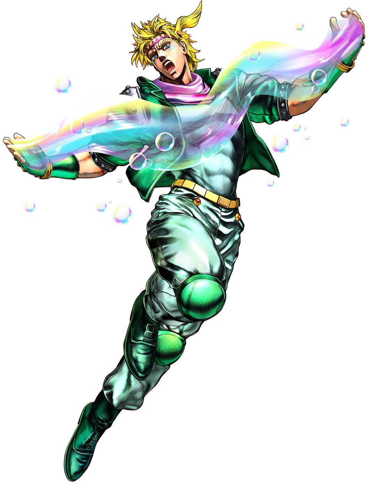
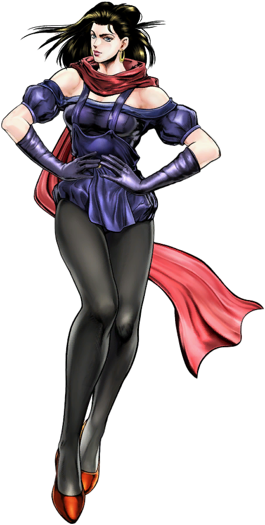
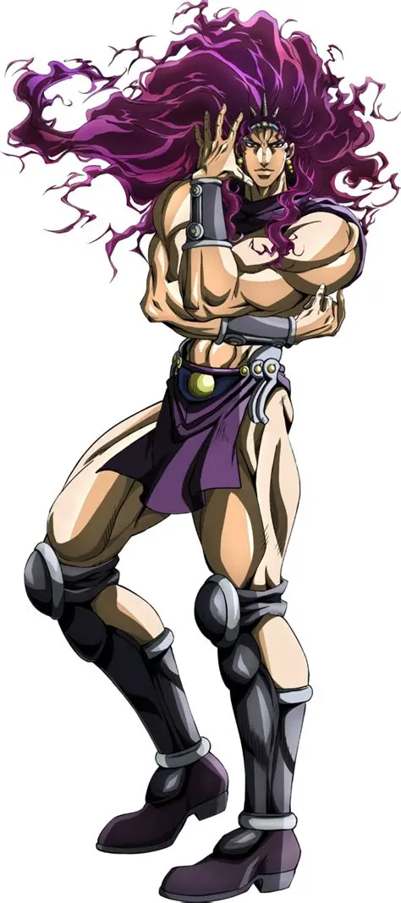
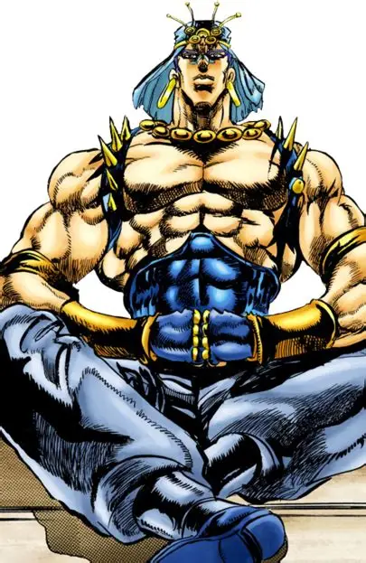
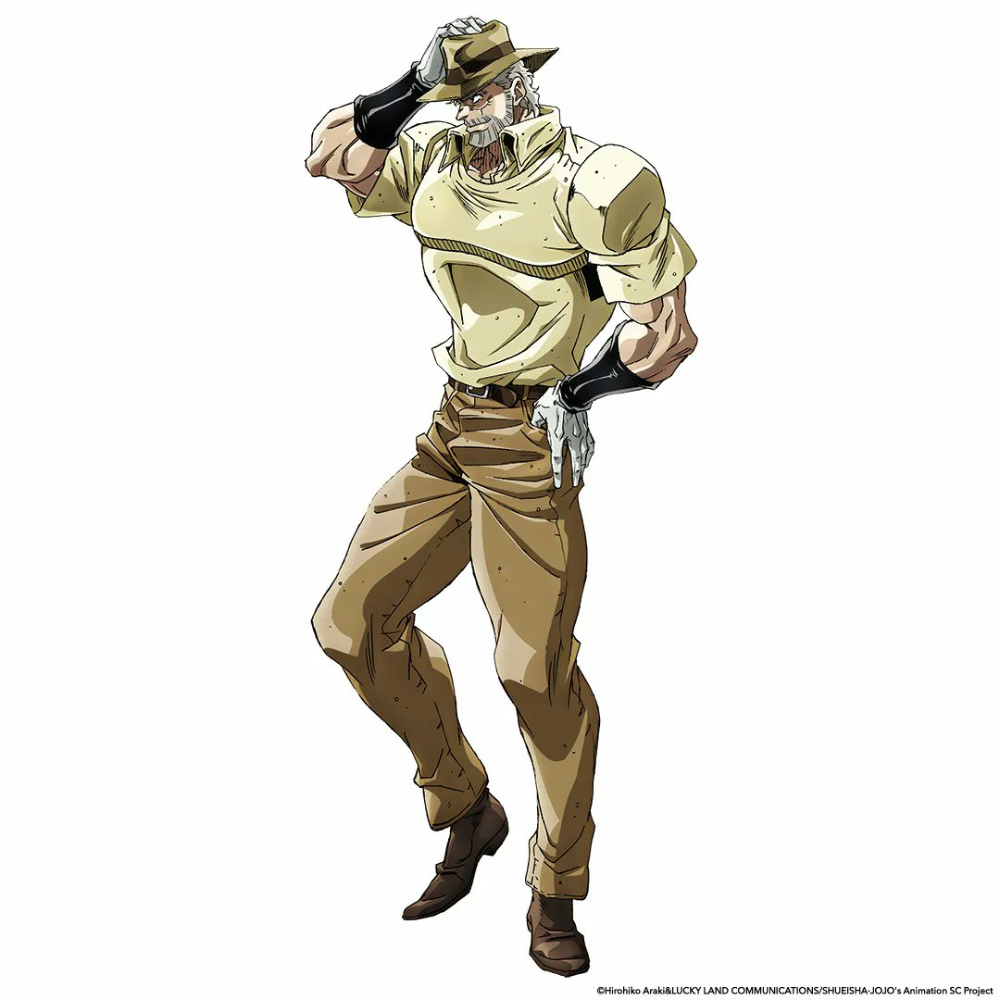
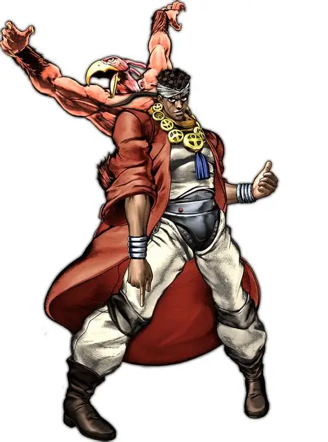
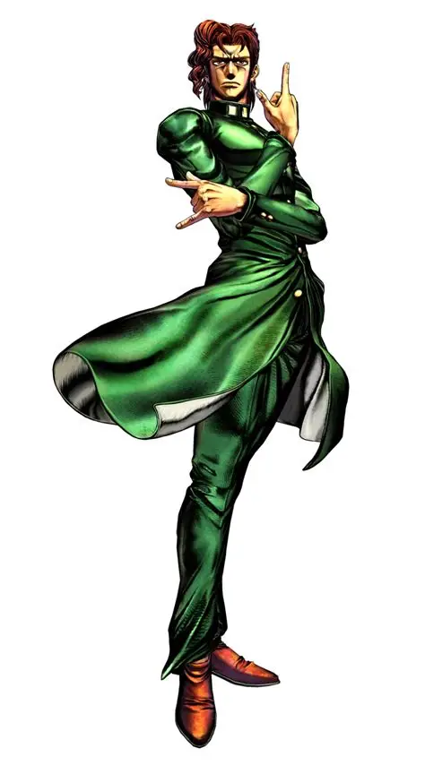
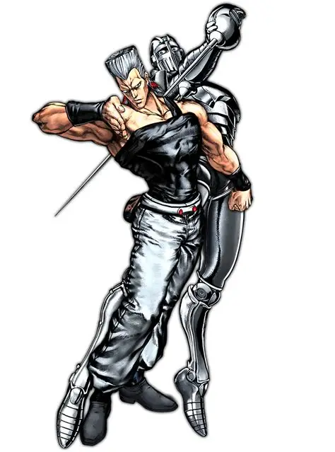
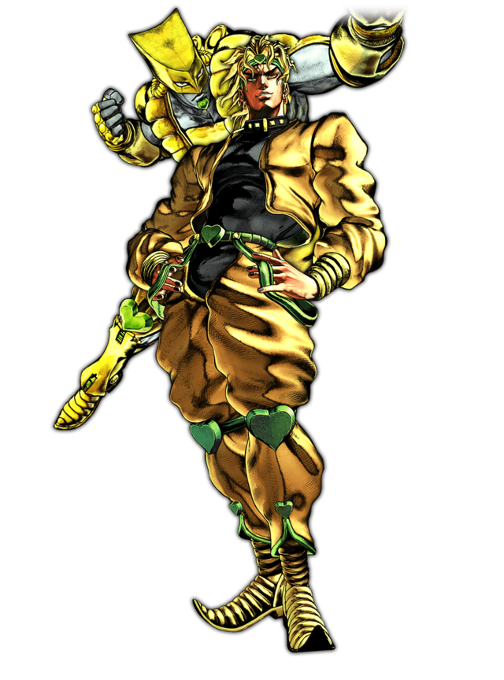

Galería de personajes
Pulsa en un nombre para ir a la parte donde aparece.
 Jonathan Joestar |
 Dio Brando |
 Robert E. O. Speedwagon |
 William A. Zeppeli |
 Joseph Joestar |
 Caesar Zeppeli |
 Lisa Lisa |
 Kars |
 Wamuu |
 Jotaro Kujo |
 Joseph Joestar (anciano) |
 Muhammad Avdol |
 Noriaki Kakyoin |
 Jean Pierre Polnareff |
 Dio Brando (Stardust) |
 Josuke Higashikata |
 Okuyasu Nijimura |
 Koichi Hirose |
 Rohan Kishibe |
 Yoshikage Kira |
 Giorno Giovanna |
 Bruno Bucciarati |
 Leone Abbacchio |
 Guido Mista |
 Diavolo |